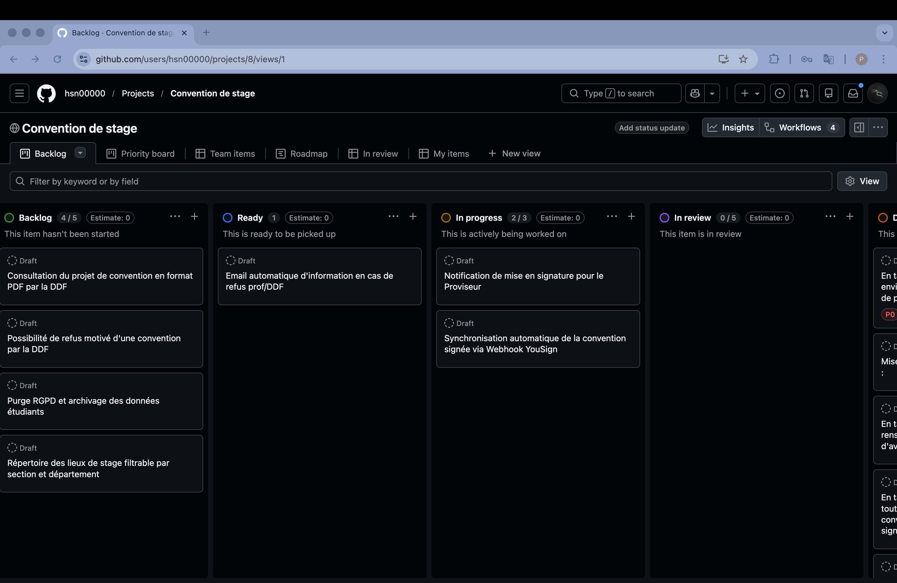
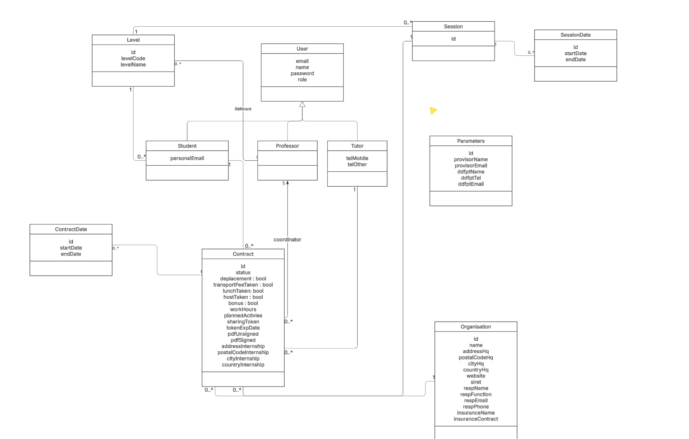

Conventio est une application web de gestion dématérialisée des conventions de stage, développée pour le Lycée Gabriel Fauré. Elle remplace un processus entièrement papier en centralisant la création, la validation et la signature des conventions entre les quatre acteurs clés : l'étudiant, le tuteur en entreprise, le professeur référent et l'administration (DDF).
Ce projet représente ma montée en compétences sur Symfony 7.3 avec une architecture multi-rôles avancée, un moteur de workflow pour le cycle de vie des conventions, l'intégration de l'API YouSign pour la signature électronique, et un système d'emails transactionnels sécurisés avec liens tokenisés.
Un projet format entreprise
Méthode Agile Scrum · Projet à deuxConventio a été conduit comme un vrai projet professionnel, en appliquant rigoureusement la méthode Agile Scrum tout au long du développement. Des mini-réunions régulières nous permettaient de faire le point : où on en était, ce qu'on allait faire ensuite, et de lever les blocages au plus tôt.
Pour piloter le travail à deux, nous avons utilisé GitHub Projects en mode board Kanban. Chaque fonctionnalité était tracée sous forme de draft ou d'issue, déplacée entre Todo, In Progress et Done au fil de l'avancement — ce qui nous donnait une vision claire et partagée du backlog à tout moment.

Réunions avec la DDF
Conception & modélisation avec le clientNous avons tenu plusieurs réunions directement avec la DDF de l'établissement (Direction des Finances et des Formations) pour recueillir les besoins réels et affiner le périmètre de l'application. Ces échanges nous ont permis de co-construire le diagramme de classe, de valider les rôles et les transitions du workflow, et de nous assurer que chaque écran correspondait aux attentes concrètes de l'équipe administrative.
Travailler directement avec l'équipe qui allait utiliser l'outil au quotidien a considérablement orienté nos choix d'architecture et de design. Un projet ancré dans une réalité terrain, pas seulement dans un cahier des charges.
